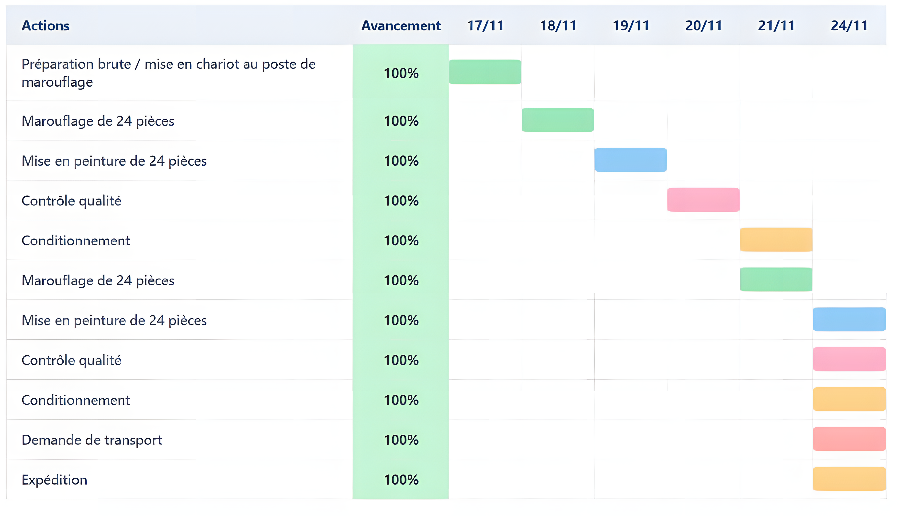

Pilotage d’un changement de process industriel
Remplacement d’une méthode de masquage coûteuse par une solution plus écologique et économique pour la peinture de pièces de carrosserie.
- Planification avec diagrammes de Gantt et PERT, analyse des risques et coordination des services.
- Dimensionnement de prototypes, tests de résistance et validation lors d’essais industriels.
- Suivi de la validation du process et conception d’outils de manutention adaptés.